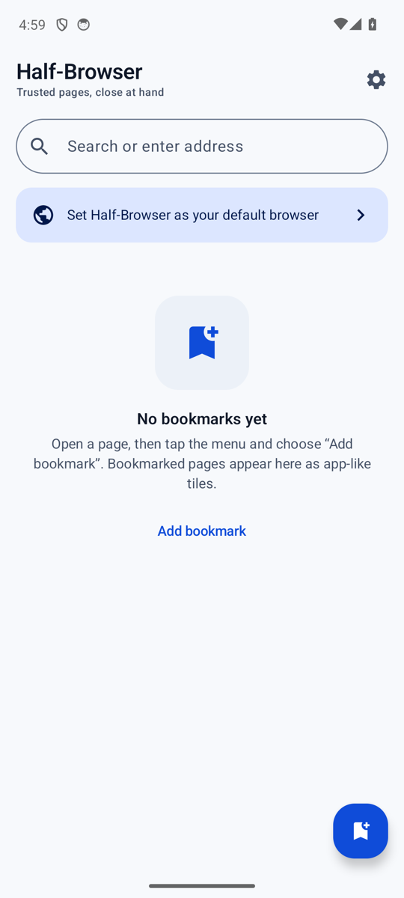

Android 8.0+ · Android WebView (Chromium) · v1.0.0 · MIT
Half-Browser / ハーフブラウザAs páginas em que você confia
sempre por perto.
O Half-Browser é um navegador leve baseado no Android WebView (Chromium). Para páginas HTTPS com certificado autoassinado, você revisa os detalhes do certificado antes de decidir confiar nele. As credenciais de autenticação HTTP são guardadas criptografadas com o Android Keystore e podem ser preenchidas na próxima vez. Sem anúncios, sem análises e sem contas.
- Requisito
- Android 8.0 (API 26) ou superior
- Idioma da interface
- Japonês / Inglês
- Licença
- MIT · Gratuito
- Desenvolvedor
- Yuki Orita (Yuki_Orita)

What it does
Só o necessário,
em um navegador.
O Half-Browser usa o Android WebView como motor de páginas e mantém as tarefas do dia a dia simples: abrir páginas, guardar favoritos e conferir certificados. Não há anúncios nem análises, e a aparência pode ser ajustada conforme sua preferência.
Abra páginas HTTPS autoassinadas depois de conferi-las.
Em páginas como um servidor na sua rede local, cujo certificado não foi emitido por uma autoridade pública, você pode conferir o host, o emissor, a impressão digital SHA-256 e a validade, e então escolher "Confiar uma vez" ou "Sempre confiar neste site".
Autenticação HTTP, guardada criptografada e preenchida.
As credenciais Basic e Digest que você digita podem ser salvas e preenchidas automaticamente na próxima vez. Elas são criptografadas com o Android Keystore e o EncryptedSharedPreferences e ficam fora do backup do Android.
Favoritos como blocos com ícone.
Os favoritos aparecem em grade na tela inicial. Cada bloco tem um ícone de monograma gerado offline. Pressione longamente um bloco para editar, excluir, compartilhar ou adicionar um atalho na tela inicial do aparelho.
Receba links externos como navegador padrão.
Ao escolher o Half-Browser como navegador padrão nas configurações do Android, ele recebe os links abertos por outros aplicativos. Se a URL já estiver nos favoritos, ela abre com uma barra que mostra o nome do favorito.
Escuro, claro ou seguindo o sistema.
Escolha o tema escuro, o claro ou o do sistema. Em aparelhos compatíveis, também é possível usar cores dinâmicas.
Confortável em celulares e tablets.
Ajuste a escala da interface de 80% a 140% e a escala do texto de 80% a 150%. Escolha o número de colunas da grade: automático, 3, 4, 5, 6 ou 8. O modo paisagem é compatível.
Self-signed HTTPS
Confira o certificado,
e então decida confiar.
Quando um certificado não é confiável, o Half-Browser explica o motivo e oferece os detalhes para você examinar. A decisão é sua.
-
01
Leia o aviso
São mostrados o nome do host e o motivo de o certificado não ser confiável, como não ter sido emitido por uma autoridade pública.
-
02
Confira os detalhes
Abra "Mostrar detalhes do certificado" para ver o emissor, a impressão digital SHA-256 e a data de validade.
-
03
Escolha o alcance
Selecione "Confiar uma vez" ou "Sempre confiar neste site". A confiança é guardada para a combinação exata de host e certificado.
-
04
Perguntado de novo se mudar
Se o certificado mudar, você será consultado novamente. Você pode revogar a confiança em um site a qualquer momento nas configurações.

HTTP authentication
As credenciais ficam protegidas no seu aparelho.
Os nomes de usuário e senhas de autenticação HTTP (Basic e Digest) são guardados no EncryptedSharedPreferences, criptografados com uma chave mantida pelo Android Keystore. Credenciais não são salvas em conexões HTTP sem criptografia.
Você pode excluir as credenciais salvas a qualquer momento nas configurações. Elas também ficam fora do backup do Android.
Home and bookmarks
Organize as páginas que você usa
em blocos.
A tela inicial tem um campo de busca e uma grade de favoritos. Toque em um bloco para abrir a página e pressione longamente para organizar.


- Blocos com íconeÍcones de monograma gerados offline. Edite para mudar o nome e o ícone.
- Ações com pressão longaEditar, excluir, adicionar atalho na tela inicial e compartilhar em um só menu.
- Confirmação de atalhoUma etapa de confirmação aparece antes de o atalho ser adicionado ao lançador.
- Colunas da gradeEscolha automático, 3, 4, 5, 6 ou 8 colunas conforme a largura da tela.
Default browser
Defina como padrão
para receber links.
No Android, o navegador padrão é escolhido pelo usuário nas configurações do sistema. Depois de selecionar o Half-Browser, ele recebe os links externos abertos por outros aplicativos. Se a URL já estiver nos favoritos, ela abre com uma barra que mostra o nome do favorito.
Display and language
Se adapta à sua tela,
e é fácil de ler.
Funciona em celulares, tablets e no modo paisagem. As telas inicial e de configurações mantêm o layout organizado ao alterar o tamanho do texto e da interface.
-
Celular, retrato
Campo de busca e favoritos em ordem, do topo para baixo, fáceis de usar com uma mão.
-
Celular, paisagem
A grade de favoritos e a tela de navegação funcionam também no modo paisagem.
-
Tablet
Os blocos de favoritos continuam legíveis na tela mais larga.
A interface está disponível em japonês e inglês e segue a configuração de idioma do aparelho.
Get started
v1.0.0, a partir do GitHub.
O código-fonte do Half-Browser está publicado no GitHub. A versão mais recente está disponível em GitHub Releases.
Abrir Releases- Abra o repositório em github.com/oriyu90/half-browser.
- Baixe o APK mais recente em Releases e instale-o no seu aparelho Android.
- Para receber links externos, escolha o Half-Browser como navegador padrão nas configurações do Android.
- Para compilar a partir do código-fonte, clone o repositório e abra-o no Android Studio.
Requer Android 8.0 (API 26) ou superior. Instalar um APK fora da Play Store pode exigir permitir a instalação de fontes desconhecidas.
Developer
Conheça quem está por trás.
O Half-Browser é desenvolvido por Yuki Orita (折田悠希 / おりたゆき / Yuki_Orita). Envie relatórios de bugs e pedidos no Discord, acompanhe as novidades no X e no site oficial, e encontre o código-fonte e as versões no GitHub.